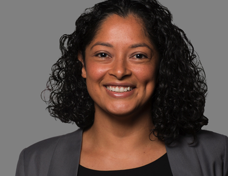
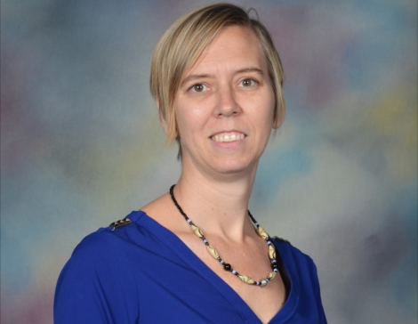
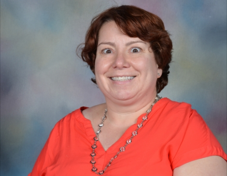

Welcome to the Elementary School
Our Elementary School program is housed in three adjacent buildings, serving students from the Child Development Center (3 year olds) through Grade Five. The Elementary Staff consists of certified and talented teachers from the United States, Canada, and New Zealand, supported by instructional assistants, technology support staff, guidance counselors, secretaries, two assistant principals, and one principal.
The Child Development Center students have half-day programs, whereas, the Kindergarten I and Kindergarten II students remain until 1:00 PM. The instructional program in Grades 1 through 5 is an outstanding integrated American curriculum, based on the Common Core State Standards. Our students’ educational experience is strengthened by special offerings in Arabic, Library, Computers, Science Lab, Art, Drama, Music, and Physical Education and concludes at 2:00 PM. In the Elementary School, we are committed to developing the "whole" child through a rigorous academic and social curriculum.
In the regular classroom, students are given opportunities to develop the skills necessary to be successful in the global community of the 21st century. Students are asked to apply this knowledge in the classroom and beyond. Students also have opportunities to participate in a range of educational opportunities through field trips, school-wide events, and a variety of after-school activities. We work to ensure that the Elementary School is a safe, secure, and educationally enriching environment for children.
The Elementary Faculty is characterized by compassion, caring and commitment to the education of our children. We believe that children learn in many ways and, therefore, employ a variety of teaching methods and styles. We also believe in the intrinsic value of learning and that children learn best when actively applying concepts in real-life situations. We are a community of learners who practice compassion, make a difference, and learn for life.
Elementary School Administration
Steven Caley, Principal
Welcome to the Elementary School webpage! Our mission is to inspire life-long learners to excel in American Higher Education and the global community as productive, compassionate citizens.
I look forward to working with you to ensure that all of our students are to achieve academic and social success. Our future is founded not only upon the civility and compassion that we can stimulate in today’s students but in their ability to adapt, change and grow in light of rapidly changing realities.
To be successful, students need to be critical thinkers, creative problem solvers, lifelong learners and effective communicators. So too, will the adults who work with them. Education is a continual process of reimagining and refining a vision of who we are as individuals and how we relate to one another. Our office is always open for you to come in and share your hopes for your children.
Teachers impact student learning and success. Great teaching can inspire and sustain a student for many years, even a lifetime. Our caring and dedicated faculty encourages students to learn for life, make a difference and practice compassion. They teach our rigorous school curriculum, based on the Common Core State Standards, providing the foundation that prepares our students for American higher education.
During and after school we offer students a broad range of opportunities to express creativity, performance, athletics and inclusion. We believe in finding and developing every student’s unique talents. A strong sense of community with an emphasis on the arts, sports and a social curriculum reinforces our rigorous academic goals.
Steven Caley has been working at the American School of Kuwait since 2010. In that time, he has been a classroom teacher, assistant principal, and Director of Student Life and Communications. Prior to Kuwait, he taught in Canada and Australia. Steven holds a Bachelor of Science, Master of Teaching, Master of Education, and Principal’s Qualifications. Currently, Steven is a doctoral student in the Educational Leadership and Change program at the University of Southern California.

Ana Allen, Assistant Principal
I am delighted to be part of a school that has a culture focused on student learning, and a commitment to high expectations, innovation, and collaboration. I believe that it takes a partnership between teachers, students, parents, and the school community to help students achieve the life skills necessary to become successful members of society.
As an Assistant Principal, I am committed to further developing your child’s social, emotional and academic growth. But more importantly, I hope to inspire your children to embrace the learning that stems from their natural curiosities and wonders. I want nothing more than for our students and teachers to love coming to school everyday and enjoy learning together!
I am thrilled to meet you and your children and look forward to the learning and laughter that is sure to come.
Ana Allen has been working at the American School of Kuwait for the past six years. Prior to Kuwait, Ana taught Middle School and Elementary in Long Beach, California. Ana holds a Bachelor’s degree in Education and a Master’s in Educational Administration. When not at school, Ana enjoys spending time with her husband and two children.
Pauline Roberts, Assistant Principal
I enjoy working at ASK alongside a caring team of teachers and administrators who work hard to make sure your child becomes a lifelong learner. I am passionate about helping children.
With a special interest in the younger learner I believe that Kindergarten is vitally important, as it is during these first years at school, children develop their love for learning. They build friendships, learn to read and write and develop early mathematical knowledge.
As an Assistant Principal I look forward to working with you and your child to ensure that our program provides the best possible start for your child’s educational journey. If I can assist you in any way please don’t hesitate to contact me.
Pauline Roberts comes from Auckland, New Zealand. She holds a Diploma of Teaching, a Bachelor of Education and a Postgraduate Diploma in Education (Early Years). In her spare time she enjoys reading, fitness, travelling and spending time with family and friends.

Nicole Johnson, Counselor
I am very excited to join the ASK team. It is a privilege to join a staff comprised of compassionate, dedicated and talented educators. I look forward to collaborating with parents and students to ensure the 2016-2017 school year is positive, and productive for all.
As a guidance counselor for grades 3-5 my goal is to help students find success in academics and social/emotional growth. It is important for students to learn who they are and how they can have an impact in the world around them. During the year I will be going into classrooms providing instruction on Responsive Classroom and the CARES curriculum. I will also working with students in small groups that build on the concepts on friendship, self-confidence, anger management, organization, and responsibility. I look forward to seeing what positive contributions our students can make in the ASK community.
Originally from Canada, for the past 5 years, Nicole Johnson has been teaching music and technology for grades PK-9 in Ouagadougou, Burkina Faso, West Africa. She holds a Bachelor of Arts degree in Psychology, a Master's of Education in International Education and is completing her Master's of Education in International counseling at Lehigh University. Nicole enjoys playing softball, practicing yoga and traveling with her family.

Allison Levine, Counselor
Welcome to the 2016-2017 academic school year! I am excited to be a part of a compassionate group of educators, parents and students, where community building is noteworthy. Education is essential and provides the framework to developing healthy relationships, and acquiring the knowledge and skills, necessary to prepare for the world globally.
As the Guidance Counselor for the Lower Elementary School, my goal is to help students focus on academic, personal/social development to achieve success in school and become productive citizens. Communication is vital in building a cohesive relationship with parents. If I can be of assistance to you, in helping your child academically or socially, please don’t hesitate to contact me. I look forward to working with you!
For the past two years, Ms. Levine has been working as a behavioral aide for the Burlingame School District in Northern California. Ms. Levine has also worked with special needs and talented and gifted students. She holds a Bachelor of Arts in English Literature, a Master’s in Adolescent English Education, and a Master’s in School Counseling from Hunter College. In her spare time, she loves to read, watch movies, and walk.